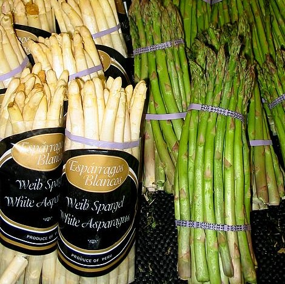
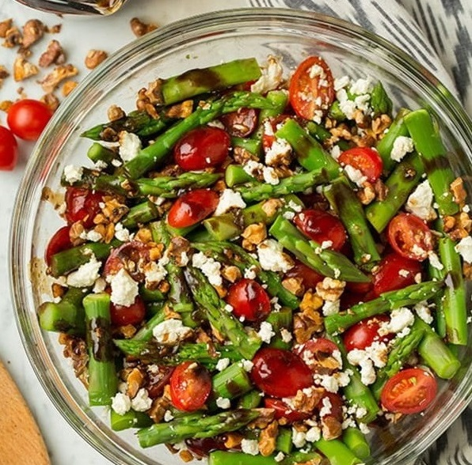
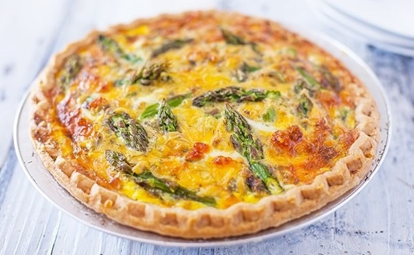
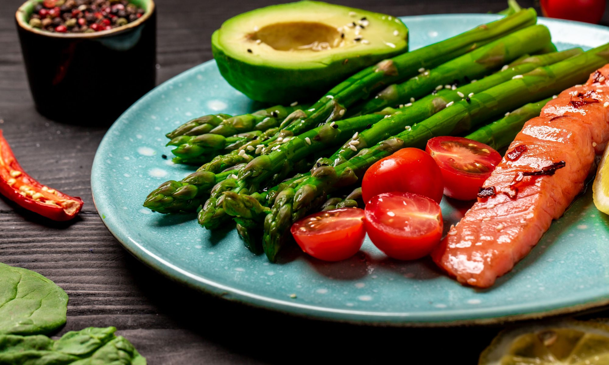
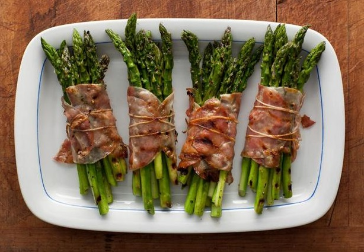
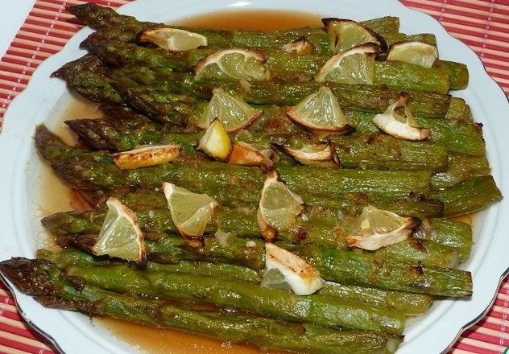

-
¿Cómo se pueden cocinar los espárragos?
- crudos
- al horno
- cocidos
- fritos
- marinados
-
¿En qué platos se comen los espárragos?
- con carne
- con pescado
- en las ensaladas
- en las sopas
- en los posteles
- como un guarnicion
- como un aperitivo
-
Los espárragos combinan bien con:
- el aceite de oliva
- el ajo
- el limón
- los tomates
- el queso
- el jamón
-
¿A qué hora del día se comen los espárragos?
- para desayunar
- para comer
- para cenar
- 
- 
- 
- 
- 
- 